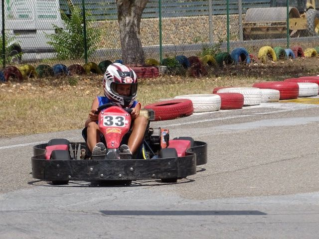
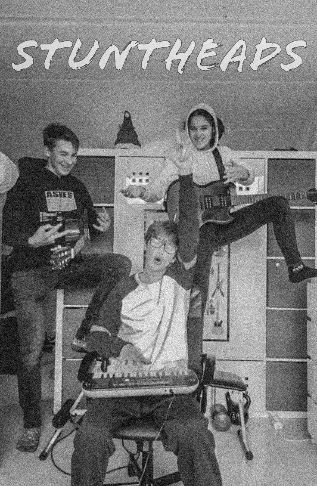
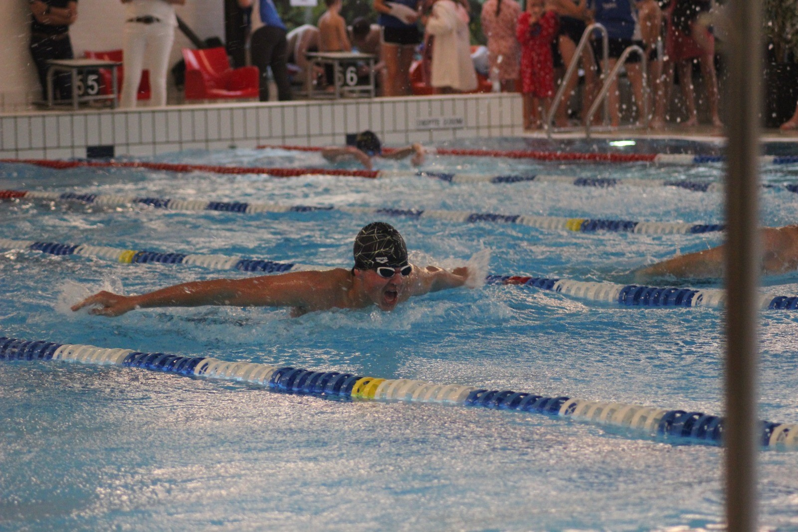

al zins ik kan lopen ben ik bezig geweest met auto's. natuurlijk kon/mocht ik toen nog niet rijden.
al was ik wel telkens bezig met speelgoed auto's. ik houi daarom ook enorm veel van karten.
ik hoop daarom later ook dat ik snelle auto's kan rijden.

de foto die je naast me ziet is van mij en mijn 2 vrienden. ik ken die vrienden al zins ik op school zit.
wij zaten namelijk alle drie op de zelfde school. dat komt grotendeels ook omdat we letterlijk binnen 20 meter van elkaar wonen.
deze foto is nu al een jaar geleden. toen we een band waren gestart. tussen nu en een jaar terug hebben we niet veel liedjes gemaakt, maar wel een paar.
ik beschouw hun ook als famlilie.

in de avgelopen 16 jaar heb ik 4 sporten gedaan, maar 1 daarvan is en zal altijd mjin favo blijven. en dat is wedstrijdzwemmen.
dat is niet de enige sport die ik deed. ik heb namelijk ook nog getennist, gejudo't en gevoetbalt.
de foto hiernaast is ook een foto van mij tijdens het zwemmen.
